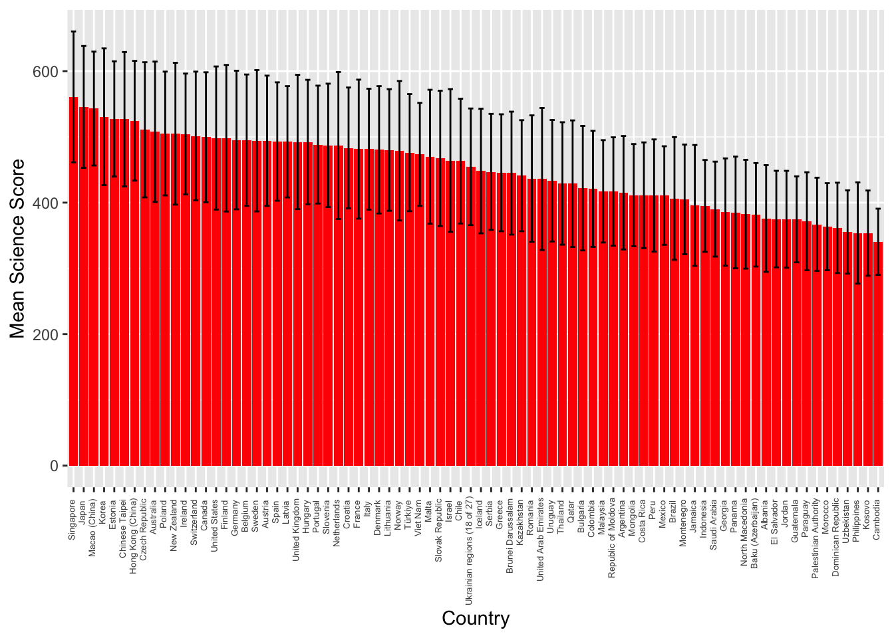
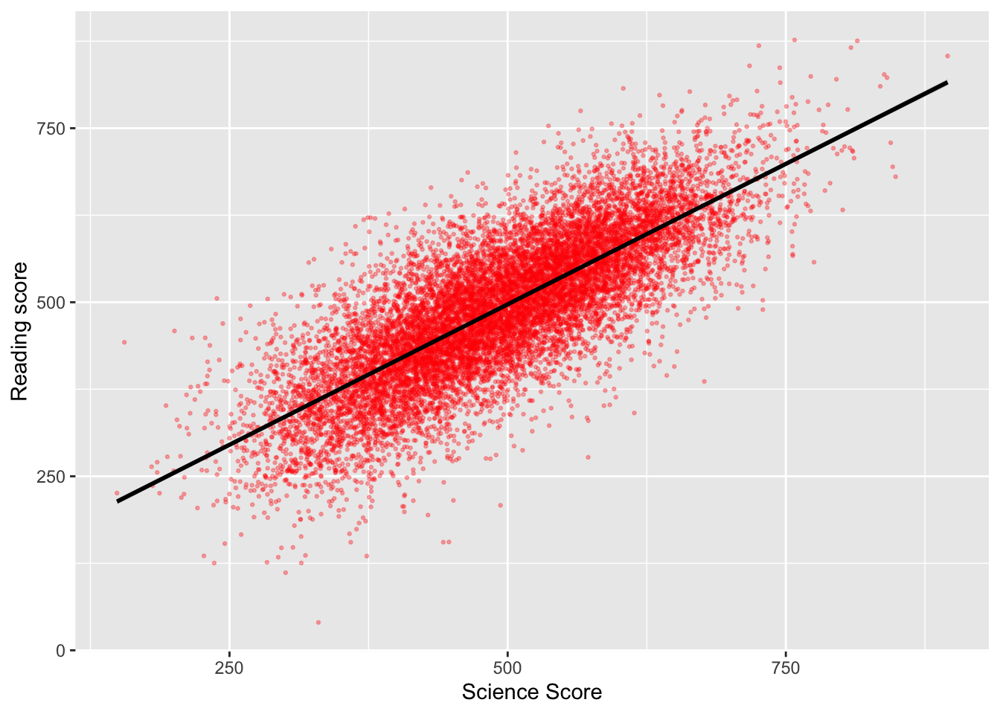

library(DiagrammeR)grViz(" digraph Random{ graph [layout = dot, overlap =T, bgcolor='white', splines=line]#controls l type setup node [shape = box,style='filled', fillcolor='skyblue', fontSize=30,fontcolor='darkgrey', fontname= 'Arial'] a [label = 'What do you want to do?'] b [label = 'Test a hypothesis - on what kind of data?'] c [label = 'Examine a relationship'] d [label = 'Continuous']; e [label = 'Normally Distribured/Parametric']; f [label = '1 Group']; g [label = 'One sample t-test', fillcolor='lightyellow']; h [label = 'Do a test of normality']; i [label = 'qqplot', fillcolor='lightyellow']; j [label = 'Tests on skewed distributions', fillcolor='lightyellow']; k [label = 'Discrete / Categorical']; l [label = '2 Groups']; m [label = 'Unpaired groups']; n [label = 'Expected counts more than 5\nin more than 75 per cent of cells']; o [label = 'Chi-squared', fillcolor='lightyellow']; p [label = 'Expected counts more than 5\n in less than 75 per cent of cells']; q [label = 'Fisher exact test', fillcolor='lightyellow']; r [label = 'Continuous variables']; s [label = 'Linear Regression', fillcolor='lightyellow']; t [label = '2 groups'] u [label = 'Paired groups'] v [label = 'Unpaired groups'] w [label = 'Paired t-test', fillcolor='lightyellow'] x [label = 'Unpaired t-test', fillcolor='lightyellow'] y [label = '3 groups or more'] z [label = 'anova', fillcolor='lightyellow'] aa [label = 'Not normally distributed'] a -> b a -> c b -> d d -> h h -> i i -> aa aa -> j i -> e e -> f f -> g b -> k k -> l l -> m m -> n n -> o m -> p p -> q c -> r r -> s e -> t t -> u t -> v u -> w v -> x e -> y y -> z }")
1.2 Pre-session task - Loading the data
We will continue to use the PISA_2022 dataset, make sure it is loaded.
In the lecture, this flow chart was introduced (which us produced using R code here - unfold the code to see how this is done using the DiagrammeR package)
Show the code
grViz(" digraph Random{ graph [layout = dot, overlap =T, bgcolor='white', splines=line]#controls l type setup node [shape = box,style='filled', fillcolor='skyblue', fontSize=20,fontcolor='darkgrey', fontname='Arial'] a [label = 'What do you want to do?'] b [label = 'Test a hypothesis - on what kind of data?'] c [label = 'Examine a relationship'] d [label = 'Continuous']; e [label = 'Normally Distribured/Parametric']; f [label = '1 Group']; g [label = 'One sample t-test', fillcolor='lightyellow']; h [label = 'Do a test of normality']; i [label = 'qqplot', fillcolor='lightyellow']; j [label = 'Tests on skewed distributions', fillcolor='lightyellow']; k [label = 'Discrete / Categorical']; l [label = '2 Groups']; m [label = 'Unpaired groups']; n [label = 'Expected counts more than 5\nin more than 75 per cent of cells']; o [label = 'Chi-squared', fillcolor='lightyellow']; p [label = 'Expected counts more than 5\n in less than 75 per cent of cells']; q [label = 'Fisher exact test', fillcolor='lightyellow']; r [label = 'Continuous variables']; s [label = 'Linear Regression', fillcolor='lightyellow']; t [label = '2 groups'] u [label = 'Paired groups'] v [label = 'Unpaired groups'] w [label = 'Paired t-test', fillcolor='lightyellow'] x [label = 'Unpaired t-test', fillcolor='lightyellow'] y [label = '3 groups or more'] z [label = 'anova', fillcolor='lightyellow'] aa [label = 'Not normally distributed'] a -> b a -> c b -> d d -> h h -> i i -> aa aa -> j i -> e e -> f f -> g b -> k k -> l l -> m m -> n n -> o m -> p p -> q c -> r r -> s e -> t t -> u t -> v u -> w v -> x e -> y y -> z }")
That chart will help you choose the test to use for the tasks below. # Seminar Tasks
2.1 Task 1 Plot a graph of mean science scores by country
Imagine we wish to compare the mean scores of students on the science element of PISA by plotting a bar graph. First you need to use the sumarise function to calculate means by countries. Then use ggplot with geom_col to create the graph. Extension task: add error bars for the standard deviations of science scores.
Show the code
# Task 1: Plot a graph of mean science scores by country# Create a variable avgscience - for every country (Group_by(CNT)) calculate the mean# science score (PV1SCIE) and ignore NA (na.rm=TRUE)avgscience <- PISA_2022 %>%group_by(CNT) %>%summarise(mean_sci =mean(PV1SCIE, na.rm =TRUE)) %>%arrange(desc(mean_sci))# Plot the data x=CNT (reorder to ascending order), mean science score on the y# Change the fill colour to red, rotate the text, locate the text and reduce the font sizeggplot(data = avgscience,aes(x =reorder(CNT, - mean_sci), y = mean_sci)) +geom_col(fill ="red") +theme(axis.text.x =element_text(angle =90, hjust =0.95,vjust =0.2, size =5))+labs(x ="Country", y ="Mean Science Score")
Show the code
# Extension version: added summarise to find standard deviation avgscience <- PISA_2022 %>%group_by(CNT) %>%summarise(mean_sci =mean(PV1SCIE, na.rm =TRUE),sd_sci =sd(PV1SCIE, na.rm =TRUE)) %>%arrange(desc(mean_sci))# Extension version: geom_errorbar added with aes y=mean_sci (the centre of the bar) and then the maximum and minimum set to the mean plus or minus the standard deviation (ymin=mean_sci-sd_sci, ymax=mean_sci+sd_sci) ggplot(data = avgscience, aes(x =reorder(CNT, -mean_sci), y = mean_sci)) +geom_col(fill ="red") +theme(axis.text.x =element_text(angle =90, hjust =0.95, vjust =0.2, size =5))+labs(x="Country", y ="Mean Science Score")+geom_errorbar(aes(y = mean_sci, ymin = mean_sci - sd_sci,ymax = mean_sci + sd_sci),width =0.5, colour='black', size =0.5)

2.2 Task 2 Are there differences in science scores by gender for the total data set?
Consider the kinds of variables that represent the science score. What is an appropriate test to determine differences in the means between the two groups? Create two vectors, for boys and girls, that you can feed into the t.test function.
Show the code
# Task 2: Are there differences in Science scores by gender for the total data set? (Yes)# A comparison of means of two continuous variables, use a t-test.1MaleSci <- PISA_2022 %>%2select(ST004D01T, PV1SCIE) %>%3filter(ST004D01T =="Male")# Choose the gender (ST004D01T) and science score columns (PV1SCIE) from 2022 data, filter for females # Put that data into FemaleSci4FemaleSci <- PISA_2022 %>%select(CNT, ST004D01T, PV1SCIE) %>%filter(ST004D01T =="Female")#Do a t-test comparing MaleSci and FemaleScit.test(MaleSci$PV1SCIE, FemaleSci$PV1SCIE)# p-value is < 2.2e-16 which is less than 0.05 so statistically significant differences exist
1
line 1 - Pipe the data into a new data frame MaleSci
2
line 2 - Choose the gender (ST004D01T) and science score columns (PV1SCIE) from 2022 data
3
line 3 - filter for males
4
line 4 - repeat for females, creating a data frame FemaleSci
Welch Two Sample t-test
data: MaleSci$PV1SCIE and FemaleSci$PV1SCIE
t = -9.3337, df = 610738, p-value < 2.2e-16
alternative hypothesis: true difference in means is not equal to 0
95 percent confidence interval:
-3.033446 -1.980566
sample estimates:
mean of x mean of y
449.2026 451.7096
2.3 Task 3 Are there differences in science scores by gender for UK students?
As above, but include a filter by country.
Show the code
# Task 3: Are there differences in Science scores by gender for UK students? (No)# A comparison of means of two continuous variables, use a t-test.# Choose the country (CNT), gender (ST004D01T) and science score columns (PV1SCIE) from 2022 data, filter for males and the UK# Put that data into UKMaleSciUKMaleSci <- PISA_2022 %>%select(CNT, ST004D01T, PV1SCIE) %>%filter(ST004D01T =="Male") %>%filter(CNT =="United Kingdom")# Choose the country (CNT), gender (ST004D01T) and science score columns (PV1SCIE) from data, filter for females and the UK# Put that data into UKFemaleSciUKFemaleSci <- PISA_2022 %>%select(CNT, ST004D01T, PV1SCIE) %>%filter(ST004D01T =="Female") %>%filter(CNT =="United Kingdom")# Do a t-test comparing UKMaleSci and UKFemaleScit.test(UKMaleSci$PV1SCIE, UKFemaleSci$PV1SCIE)
Welch Two Sample t-test
data: UKMaleSci$PV1SCIE and UKFemaleSci$PV1SCIE
t = 3.9298, df = 12964, p-value = 8.547e-05
alternative hypothesis: true difference in means is not equal to 0
95 percent confidence interval:
3.529142 10.553500
sample estimates:
mean of x mean of y
495.7375 488.6962
Show the code
# the p-value is 0.1267 over, 0.05, so statistically significant differences between males and females
2.4 Task 4 For the whole data set, is there a correlation between students’ science score and reading scores?
Reflect on the appropriate test to show correlation between two scores. This test can be carried out quite simply using a couple of lines of code. Extensions: a) perform the same analysis, but consider the impact of gender; b) Find the correlations between reading and science core by country, and rank from most highly correlated to least.
Show the code
# Task 4: For the whole data set, is there a correlation between students’ science score reading score? (Yes, significant 0.77)# Do the regression test between science score (PV1SCIE) and reading score (PV1READ) on the PISA_2022 data1lmSciRead <-lm(PV1SCIE ~ PV1READ, data = PISA_2022)summary(lmSciRead)# Extension 1: Add Gender:3lmSciRead <-lm(PV1SCIE ~ PV1READ + ST004D01T, data = PISA_2022)summary(lmSciRead)# Extension 2: Rank by correlationCNTPISA <- PISA_2022 %>%5select(CNT, PV1SCIE, PV1READ) %>%6group_by(CNT)%>%7summarise(MeanSci =mean(PV1SCIE),MeanRead =mean(PV1READ),Cor=cor(PV1SCIE, PV1READ)) %>%arrange(desc(Cor))
1
line 1 - Run a linear model, predicting PV1SCIE with PV1READ, based on PISA_2022 data, then summarise
3
line 5 - create a new data frame CNTPISA, and PISA_2022 into it selecting country, science and reading score
5
line 7 - summarise to find mean science scores, in the column MeanSci, and mean reading scores in MeanRead
6
line 9 - For each country, find the correlation between science and reading scores, put in the column Cor
7
line 10 - sort the data frame in descending order of the column Cor the correlation scores
Call:
lm(formula = PV1SCIE ~ PV1READ, data = PISA_2022)
Residuals:
Min 1Q Median 3Q Max
-348.75 -38.22 -1.08 37.50 384.95
Coefficients:
Estimate Std. Error t value Pr(>|t|)
(Intercept) 97.890279 0.303098 323 <2e-16 ***
PV1READ 0.804547 0.000671 1199 <2e-16 ***
---
Signif. codes: 0 '***' 0.001 '**' 0.01 '*' 0.05 '.' 0.1 ' ' 1
Residual standard error: 57.57 on 613742 degrees of freedom
Multiple R-squared: 0.7008, Adjusted R-squared: 0.7008
F-statistic: 1.438e+06 on 1 and 613742 DF, p-value: < 2.2e-16
Call:
lm(formula = PV1SCIE ~ PV1READ + ST004D01T, data = PISA_2022)
Residuals:
Min 1Q Median 3Q Max
-358.01 -37.74 -0.83 37.13 376.71
Coefficients:
Estimate Std. Error t value Pr(>|t|)
(Intercept) 8.486e+01 3.180e-01 266.9 <2e-16 ***
PV1READ 8.139e-01 6.674e-04 1219.4 <2e-16 ***
ST004D01TMale 1.785e+01 1.462e-01 122.1 <2e-16 ***
---
Signif. codes: 0 '***' 0.001 '**' 0.01 '*' 0.05 '.' 0.1 ' ' 1
Residual standard error: 56.88 on 613662 degrees of freedom
(79 observations deleted due to missingness)
Multiple R-squared: 0.7079, Adjusted R-squared: 0.7079
F-statistic: 7.436e+05 on 2 and 613662 DF, p-value: < 2.2e-16
2.5 Task 5 Plot a representation of UK students’ science score against reading score, with a linear best fit line.
It will help here to create a data.frame that contains a filtered version of the whole dataset you can pass to ggplot.
Show the code
# Task 5: Plot a representation of UK students’ science score against reading score.# Choose the three variables of interest, science score (PV1SCIE), reading score (PV1READ) and country (CNT)# and filter for the UK. Put the values into regplotdata1regplotdata <- PISA_2022 %>%2select(PV1SCIE, PV1READ, CNT) %>%3filter(CNT =="United Kingdom")# Plot the data in regplotdata, set the science score on the x-xis and reading on y-axis, set the size, colour and alpha (transparency)# of points and add a linear ('lm') black lineggplot(data = regplotdata, 5aes(x = PV1SCIE, y = PV1READ)) +6geom_point(size =0.5, colour ="red", alpha =0.3) +7geom_smooth(method ="lm", colour="black")+labs(x ="Science Score", y ="Reading score")
1
line 1 - Create a new data frame for plotting regplotdata
2
line 2 - Select the variables we need: PV1SCIE, PV1READ and CNT.
3
line 3 - filter for UK results
5
line 6 - set the x-axis as science scores, and y axis as reading scores
6
line 7 - use geom_point to plot a scatter graph, set the point colour to red, and transparency (alpha) to 0.3
7
line 8 - add labels

2.6 Task 6 Do girls and boys in the UK have different preferences for maths?
The PISA 2022 data set includes the variable MATHPREF (Preference of Math over other core subjects). Determine if the data for girls and boys are homogenous (i.e. if the null hypothesis that girls and boys have similar preferences for maths). Note the possible responses are: 0 No preference for mathematics over other subjects and 1 Preference for mathematics over other subjects
Show the code
# Task 6: Is there a relationship between UK boys' and girls' mathematics preferences1chi_data <- PISA_2022 %>%2select(CNT, ST004D01T, MATHPREF) %>%3filter(CNT =="United Kingdom") %>%4droplevels() %>%5na.omit()# We wish to compare two categorical variables, gender (Male/Female) and preference for maths (0 = No Preference for maths/ 1= Preference for maths)# Create a frequency table6Mathpreftable <-xtabs(data = chi_data, ~ ST004D01T + MATHPREF)# Perform the chisq.test on the data7chisq.test(Mathpreftable)# p-value= 4.554e-08 - reject the null hypothesis - boys and girls have different preferences for mathematics
1
line 1 - Pipe PISA_2022 to a new data frame to test: chi_data
2
line 2 - Select the variables we need: gender (ST004D01T), country (CNT), and math preference (MATHPEF).
3
line 3 - filter for UK results
4
line 4 - drop unneeded levels for other countries
5
line 5 - drop NAs
6
line 6 - create a contingency table of gender (ST004D01T) by maths preference (MATHPREF)
7
line 7 - perform the chi-square test
Pearson's Chi-squared test with Yates' continuity correction
data: Mathpreftable
X-squared = 29.898, df = 1, p-value = 4.554e-08
2.7 Task 7 Does mathematics preferences explain variation in mathematics score for UK students?
Arguments have been made the students who know more science, might engage in more environmental activism. Determine what percentage of variation in UK mathematics scores is explained by a) the variable MATHPREF (Preference of Math over other core subjectsn); b) MATHEASE (Perception of Mathematics as easier than other subjects); and c) MATHMOT (Motivation to do well in mathematics ).
Show the code
# Task 7: How much variability in mathematics score is explained by attitude to maths variables for UK respondentsUK_data <- PISA_2022 %>%1select(CNT, PV1MATH, MATHPREF, MATHMOT, MATHEASE) %>%2filter(CNT =="United Kingdom") %>%3na.omit()# Perform the anova test4resaov <-aov(data = UK_data,5 PV1MATH ~ MATHPREF + MATHMOT + MATHEASE)6summary(resaov)#> Significant differences exist for MATHPREF and MATHEASE, but not for MATHMOT (Motivation to do well in mathematics)# Determine the % of variation explained7library(lsr)8eta <-etaSquared(resaov)9eta <-100*eta10eta# MATHPREF explains only 0.54% of the variance, and MATHEASE, 0.26% (MATHMOT is not significant)
1
line 1 - select the variables of interest, country, maths scores, maths prefernce, maths motivation, and perception of easiness of maths
2
line 2 - filter for country of interest - i.e. the UK
3
line 3 - drop any NAs in the data
4
line 4 - use aov to perform the anova calculation. We set the data we are passing (data = UK_data) - we put the output into a new variable resaov
5
line 5 -and set that we want to determine the variance in maths scores by math preference, motivation and ease (PV1MATH ~ MATHPREF + MATHMOT + MATHEASE)
6
line 6 - produce a summary of resaov
7
line 7 - load the lsr library for the etaSquared function
8
line 8 - use etaSquared(resaov) to find the eta squared value. We convert this to a data frame so we can perform the next steps
9
line 9 - to convert the eta squared value into a percentage of variance explained, we multiply by 100